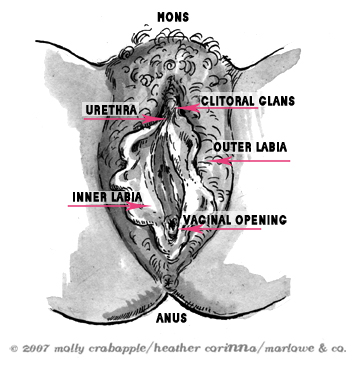
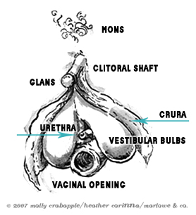

Innies & Outies: The Vagina, Clitoris, Uterus and More
by

A lot of questions about how to have sex, how to masturbate, and worries about all of what's all going on down below can be easily solved by simply getting to know what genitals and other reproductive organs are all about. Many things some people presume are problems with some kinds of sex or genital function or appearance are just realities of anatomy they didn't know.
Here's the scoop for most people whose bodies have a vulva, vagina, labia, clitoris and/or uterus and other structures.
Let's get started! It can help to get yourself a mirror, make sure you have some real privacy (or at least a door that locks) and some quality time to get to know your body and yourself. We'll just look at what you can see and feel, to get you started. Sit with your knickers off and your legs open, and get ready to take a tour.
Vulva, not vagina
The proper name for the outer genitals is the vulva (vuhl-vah). The vagina is only one part of these organs, and not the whole of them, and many people mistakenly call the vulva the vagina.
Where your pubic hair is, below your belly button, is a fatty area of tissue (skin) called the mons (mahns). Your pubic hair will move downward, as will that fatty tissue, around your labia majora (lay-bee-ah) or "lips."
If you pull your outer labia open, you will see your labia minora, or lips, which are not covered with hair, and look a bit like flower petals or small tongues. The size, length and color of the inner labia and other parts of the vulva will differ from person to person. The labia may be long and thick, or barely visible, and may look purple, red, pink, blackish or brown, depending on your own coloring. All of these variations are absolutely normal, as are the labia being two different sizes or shapes. The purpose of your inner labia is pretty important; they have sensory nerve endings which contribute to sexual pleasure and also keep icky bacteria away from what is called the vestibule.
The Infamous Clitoris
Looking at the vestibule, between those inner labia from the top down (right below your mons), you'll first see the top of the inner labia, which create a little skin fold called the clitoral hood. That hood connects to the glans, which is the tip -- and only the tip -- of the clitoris (klit-or-iss). If you pull up the hood with your fingers, you can get a closer look.
The clitoris -- which in full, internal and external, is nearly of the same size as the penis -- is usually the most sensitive spot on, and involved in the most sensitive areas of, the vulva. It's got twice the number of sensory nerve endings the penis does, and it also interacts with over 15,000 nerve endings throughout the whole pelvic area. It is created of the same sort of erectile tissue that the head of a penis has. Before we all were born, until about the sixth week of our lives as an embryo, our sexual organs were slightly developed, but completely the same no matter our sex or gender.
If you feel the clitoris with your fingers, you'll probably feel a tingle or a tickle. Rubbing it a bit, you can feel a hardish portion that is the shaft of the clitoris. The clitoris (sometimes called the "clit" or the "spot") is the primary source of most genital sensation. When you masturbate, it is what you will most likely (but not always) touch and manipulate to pleasure yourself. The clitoris is, in fact, the only organ on the entire body that is solely for sexual arousal, and is attached to ligaments, muscles and veins that become filled with blood during arousal (when you get sexually excited) and contract during orgasm. The clitoris is what most like to have stimulated in some way during oral or digital (with hands and fingers) sex, during masturbation, and during intercourse, and not just the tip or shaft. The clitoris is internal as well as external -- and the whole thing is a lot bigger than it looks from the outside -- with legs, called crura, that are within the outer labia, as well as the clitoral (or vestibular) bulbs, which surround part of the lower portion of the vaginal canal.
People are different in how and where we like our clitorises touched (or if we do at all). For some, rubbing too fast or hard, or right on the tip or shaft may be uncomfortable, but for others, it's just the thing. Like near anything else in sex, the best way to find out is usually to experiment by masturbating. For more on every body's anatomy from the standpoint of pleasure, check out: With Pleasure: A View of Whole Sexual Anatomy for Every Body.
Looking lower, you may be able to see another hood-like shape. Right below that shape is a teeny, tiny, barely visible little dot or slit, which is your urethra or urinary opening, where you urinate (or pee) from. Below that is the vaginal opening (sometimes people call it a "slit" or "hole"). You might notice how close the urinary opening is to the vaginal opening. Because of this, sometimes sexual activity can bring bacteria which infect the urinary opening, so it's important during sexual activity to both empty your bladder before and after, and to be sure your or your partners hands, mouth or other organs are clean.
During the first few times someone has intercourse or other vaginal entry, pain or bleeding can happen (though it more often does not) due to the wearing away of the corona. However, that pain or bleeding is more commonly because you had sex without being aroused enough to be properly lubricated, or did not use extra lubricant if needed. On the other hand, there are some whose vaginal coronas simply are so thick, or have such a small opening, that it is indeed painful to have intercourse or enter the vagina otherwise, and sometimes a medical procedure needs to be done to remedy that. All in all, there are many causes for or sources of sexual pain, and the corona is only one of many.
Now, if you can slide your finger into your vaginal opening, and squeeze your vaginal walls (engaging what are commonly called PC -- pubococcygeus -- or Kegel muscles), just like you were trying to hold it in when you have to urinate, or when you're trying to stop the flow of your urine. You can feel a lot of folds of skin and different textures, and see how the vagina (which is the passage between the vaginal opening and the cervix) can hold your fingers. That is the same way it holds a tampon, a penis or toy, or a child during labor.
Your vagina may be wetter or dryer right now depending on your menstrual cycle. If you're someone who menstruates and ovulates, then right after you've had your period, or when you aren't aroused you'll generally be dryer, and about two weeks into your cycle, or when you are aroused, you'll usually be a bit wetter. The mucus, or "discharge" from your vagina, which you'll sometimes see on your underpants, may vary in texture, scent and color greatly. Some people are freaked out by this, but there is no need to be, and trying to get rid of that mucus with douching or other methods is not healthy, as that mucus keeps your vagina clean of bacteria and maintains a careful acid balance vital to your health. If you're ever in doubt about vaginal discharge, the best thing to do is to call your doctor. In general, however, unless the mucus is spotted with blood and you aren't on your period, makes you itch at all, or is greenish in hue, it's probably healthy, normal discharge.

Life on the Inside
If you can put your finger inside your vagina, towards your belly, not your back, you may or may not feel a spongy length of tissue that is a bit like the roof of your mouth in texture (if you have short fingers, you may not be able to). That is the infamous g-spot, or Grafenburg Spot, another potential source of, or contributor to, sexual pleasure or orgasm and is currently understood to be another part of the internal clitoris. The vagina itself, especially past the first, front 1/3rd of it, has hardly any sensory nerve endings at all. The sensations people feel inside the vagina are often more about the external and internal clitoris, including the G-spot, than the vagina itself.
Understand, however, that not all find the g-spot being touched or stimulated to be pleasurable, and it doesn't lead to orgasm magically in everybody. It isn't a magic button, it is simply another part of your genital anatomy that is responsive to pleasure. In addition, stimulation of the g-spot may also lead to an orgasm in which some people ejaculate, or release fluid from the urethra. This is not urine, even though it may feel that way. As well, people can ejaculate from orgasm with or without g-spot stimulation.
If you poke your finger deeply into your vagina, you may feel something deep inside that feels like a nose or a dimpled chin. This is your cervix, which is the base of the uterus, where, if you were pregnant, a baby would grow. The cervix is the passage through which sperm travel to meet an egg in the fallopian tubes, but don't worry -- nothing but sperm can usually fit in there. In other words, you can't "lose" a tampon or a toy or anything else in your vagina, because it ends with your cervix.
Once you take your fingers out of your vagina, follow the trail of your genitals a bit lower. Right under your vaginal opening is a flat length of skin called the perineum (pair-ee-nay-uhm). Below the perineum is your anus.
The anus is the opening to your rectum, through which your bowel movements pass through from your bowel. Some people enjoy touching or rubbing their anus, as well as having it licked, or for having anal intercourse. Some people do not. Again, people vary in what we do and don't like when it comes to sex. The important thing to recognize is that, first, if you shower or bathe regularly, your anus is not dirty, because feces (bowel movements) are not stored there or in your rectum. Only trace amounts of feces may remain there. However, anal sex of any sort is no more safe than vaginal sex for several reasons and can also present some additional risks vaginal sex does not. First, the anus does not have any natural lubrication of its own, and the anal tissues are far more delicate and susceptible to tearing than the vaginal tissues. That makes anal sex potentially more painful if not done with care, as well as more risky as far as the spread of STIs. If you want to explore your anus either alone or with a partner (or find out more about safer sex as a whole), check out these links on how to do so safely:
- Safe, Sound & Sexy: A Safer Sex How-To
- What Safer Sex isn't
- Vaginal to anal to vaginal again, is this dangerous?
- Anal sex lowdown
Take a look at your vulva a few times, and you can experiment touching it to find out how you really work down there. Though our anatomy has the same components, every person is different in both the appearance and the experience of our genitals. There are no "magic" buttons that please us all the same, and the only way to find out what you like, and what you're comfortable with, is to get to know yourself and your body on your own.
Above all else, understand that your genitals are really no different from any other part of your anatomy: parts is parts. They aren't something to be ashamed of or embarrassed about, and in many cultures our genitals are thought of as sacred, and indeed, they are. Treat them with honor and care, and let them bring you joy.
More like This
- Page 1
- ››